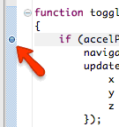
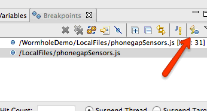
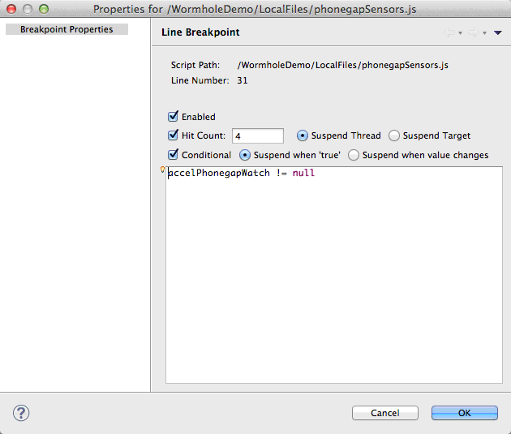
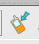
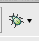
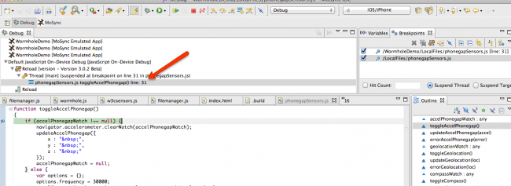
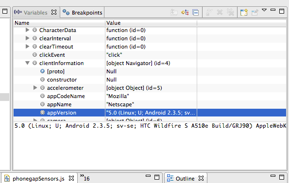
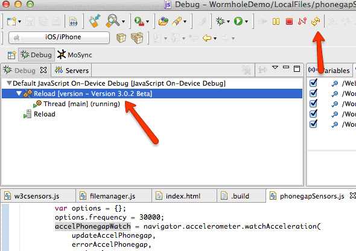

The MoSync IDE features a fully-featured debugger for JavaScript code. You can set breakpoints in your code, install and run your application package on a device, and then see the code as it executes in the MoSync IDE. To use the debugger you need to use the Debug build configuration when building your package.
You can debug both C/C++ code and JavaScript code in the MoSync Eclipse-based IDE. For instructions on C/C++ debugging, see Using the C/C++ Debugger; for instructions on using the JavaScript debugger, continue reading.
JavaScript debugging only works with HTML5 projects that have a folder called /LocalFiles in the project root. This folder is automatically created if you select one of our HTML5 project templates (see Creating Projects from Templates.)
JavaScript debugging is supported on Android and iOS devices and simulators/emulators.
General guides and tutorials related to the debugging and troubleshooting of applications can be found in our online documentation in the section called Debugging, Testing, Performance.
The JavaScript Debugger supports three types of breakpoints:
The debugger also supports breakpoint conditions and hit counts.
To set a line breakpoint, double-click the margin of the line you want to set a breakpoint at.

To set a script load breakpoint, click the script load breakpoint icon in the Breakpoints view.

(If you cannot see the breakpoints view, open the Debug perspective: Window > Open Perspective > Other... > Debug. Unless the IDE has been configured otherwise, you will be asked to open this perspective when a breakpoint is hit.)
To enable suspend upon exceptions, open the Preferences dialog and select JavaScript > Debug > Suspend On JavaScript Exceptions. This is enabled by default.
To set conditions and hitcounts for a line breakpoint, right-click on the breakpoint marker in the line margin.
For script load breakpoint you can set conditions in the “Breakpoints” view.
When set, the hitcount will stop the breakpoint to suspend execution until it has been hit the specified number of times.
If a condition is set, the breakpoint will suspend execution only if this condition is met. There is an option to suspend execution if the condition either a) evaluates to true, or b) it changed since last time the breakpoint was hit.

To start the debugger, make sure that debugging is enabled as per the instructions above in “Setting up the Debugger”.
Next, the device must be able to connect to the debug server. For emulators, this is usually not a problem since they run on the same computer as the debug server. For devices sharing say a Wi-Fi connection with the computer the debug server runs on should be enough. You may need to enable Wi-Fi on your device.
Start the app by clicking either the Send to Device button (for on-device debugging, for more information see TEMPLATE_DOC_PATH/sdk/tools/guides/ide/sending-to-device/index.html):

Or the Debug (for on-simulator debugging) button:

Follow the on-screen instructions, if any.
If a breakpoint hits, you will see something like the image below. The red arrow points to a where the breakpoint was hit and execution suspended.

Once execution suspends, you may inspect the variable scope at that point in the program. Just open the Variables view (which by default is visible as a tab to the right in the Debug perspective).
All the variables in the local scope are visible, including local variables and arguments to functions. The content of structures and arrays can be expanded by pressing the + sign next to them.
By clicking a stack frame you will be able to inspect the scope at any stack depth of the execution.

Once a breakpoint is hit, you may perform these special debugger actions:
These actions can be performed by pressing the corresponding icons in the toolbar (in the same order as the list above):
To suspend execution at any point of time, press the Suspend icon:
This will cause the JavaScript execution to suspend at the earliest possible time.
To terminate the program being debugged, press the Terminate icon:
This will terminate the program on the device.
There is an option to evaluate arbitrary JavaScript code. This can be done in two ways:
If execution is suspended, the JavaScript will be evaluated in the scope of the top stack frame.
Please note that any evaluated JavaScript expression that modifies the UI will take effect once execution starts again.
The JavaScript debugger offers basic ”Hot Code Replace” functionality. When a file is changed in a project, the client will refresh and reload those files. To change this default behaviour, open the Preferences dialog and select Do Nothing in the MoSync Tool > JavaScript On-Device Debug > When source code changes list box.
Note: for version 3.2 only HTML (.html) and JavaScript (.js) files are updated on the device/emulator. To update any other files you need to rebuild and upload the app again.
To refresh and reload even though Do Nothing is selected, select the current launch in the Debug view and press the corresponding Reload toolbar icon:
